Instalación, fusión de precisión y mantenimiento de redes de fibra óptica. Garantizamos alta estabilidad y continuidad operativa para empresas e infraestructura.
En Bertel nos especializamos en ofrecer soluciones integrales en redes de telecomunicaciones. Contamos con equipamiento de vanguardia y personal altamente capacitado para la ejecución de proyectos de tendido, empalme, fusión y certificación de fibra óptica.
Nuestro enfoque se centra en la precisión de cada conexión, cumpliendo rigurosamente las normas internacionales de seguridad y estándares de la industria para asegurar un rendimiento óptimo de la red.
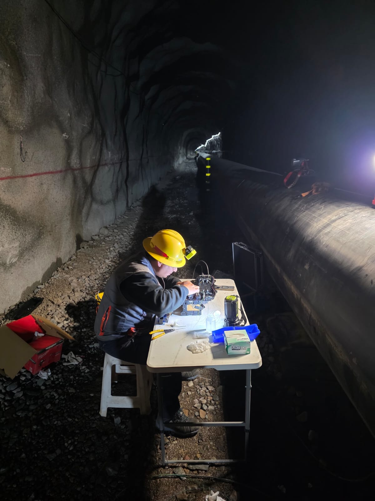
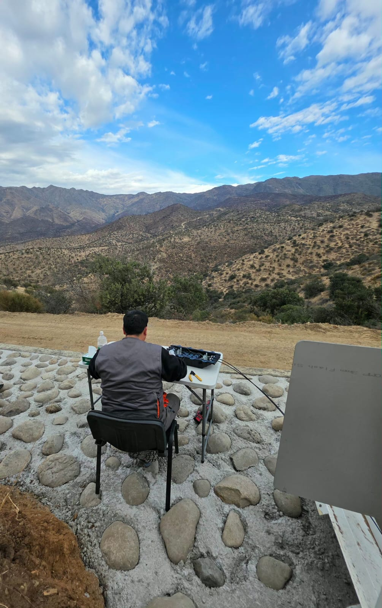
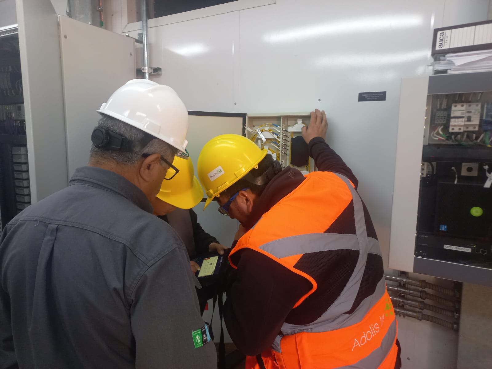
Tendido aéreo, subterráneo e interior. Despliegue de redes backbone y distribución con máxima eficiencia técnica.
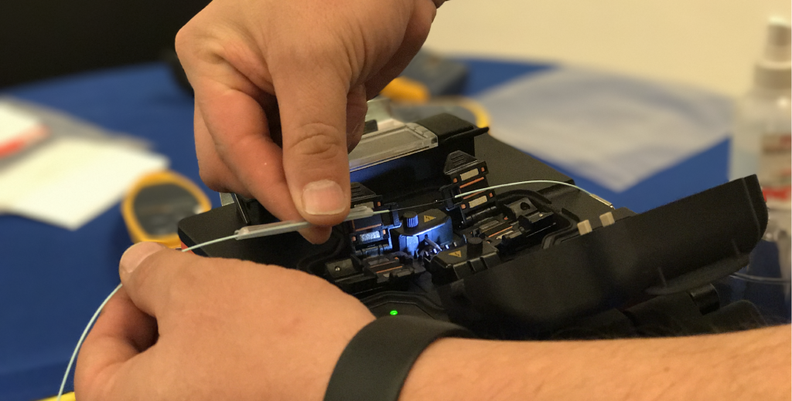
Empalmes por fusión de alta precisión y medición OTDR / Powermeter para garantizar la mínima atenuación.
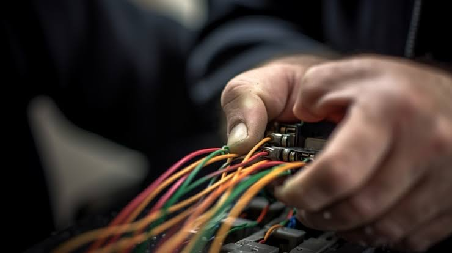
Diagnóstico rápido de fallas, reparación de cortes de fibra y planes de mantenimiento preventivo y correctivo.
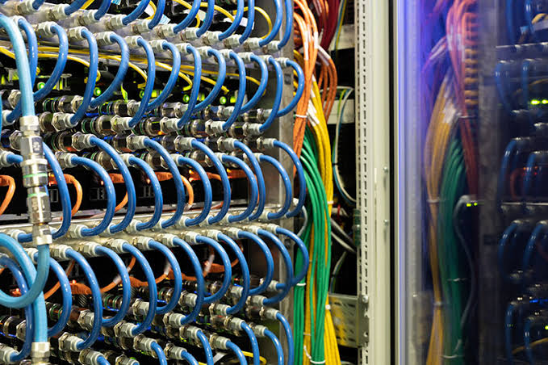
Organización, peinado y canalización de Racks, gabinetes de comunicación y patch panels.
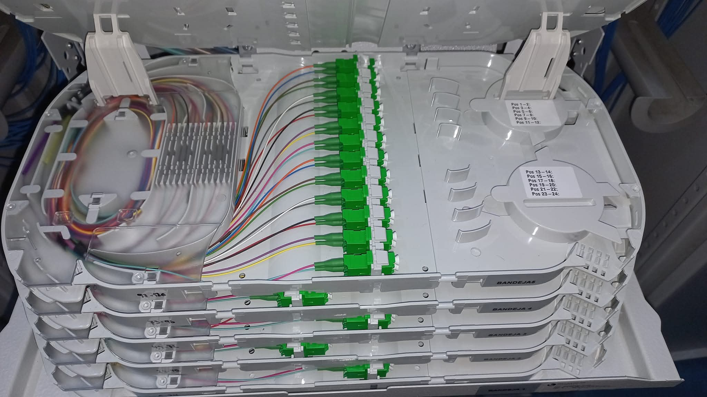
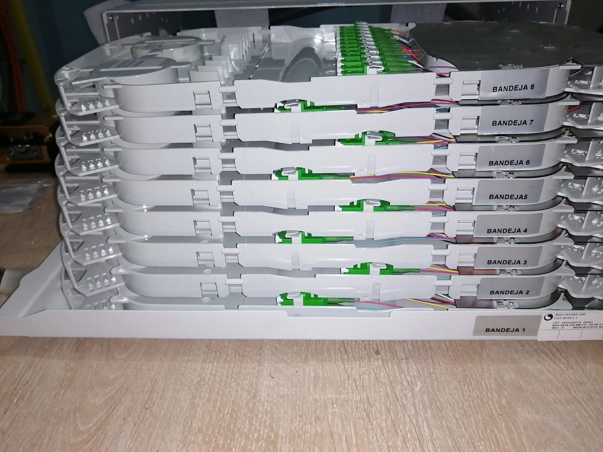
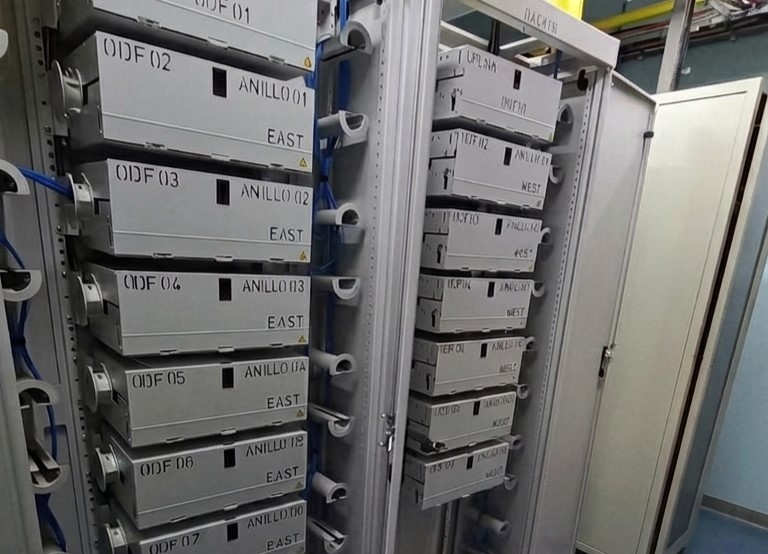
Trabajo de fusión limpia para centro de datos corporativo.
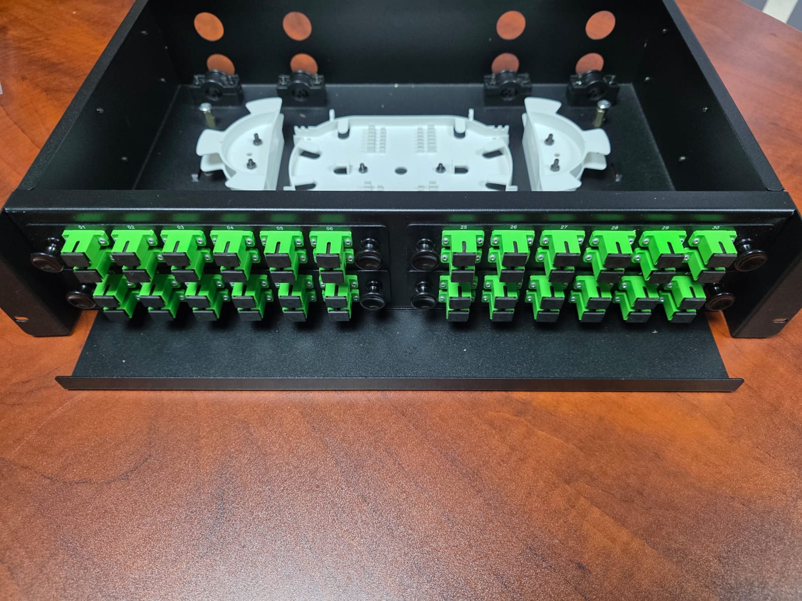
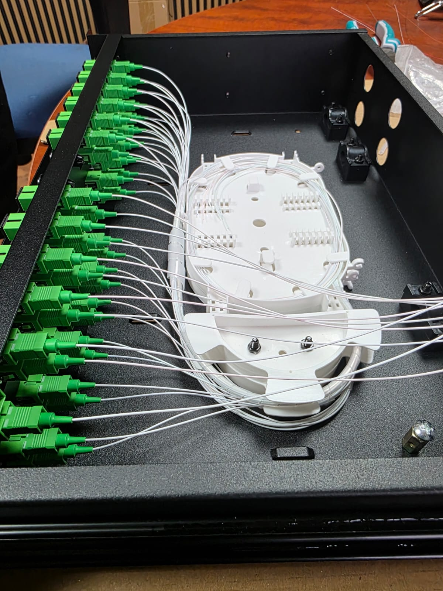
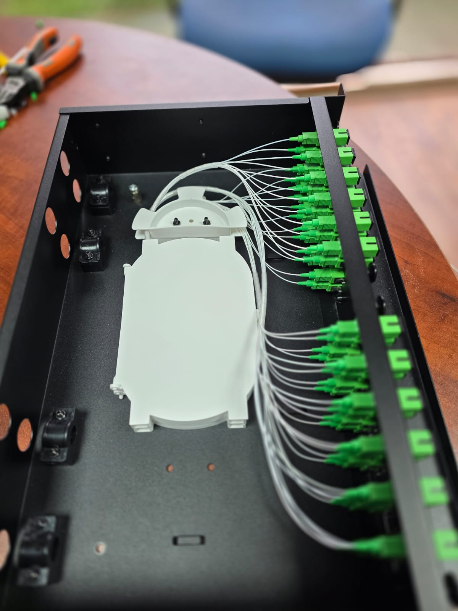
instalación de panel de terminación y distribución de fibra óptica, incorporando conectores SC/APC, pigtails y bandeja de gestión de fibras, proporcionando una solución organizada y protegida para la interconexión y administración de enlaces ópticos.
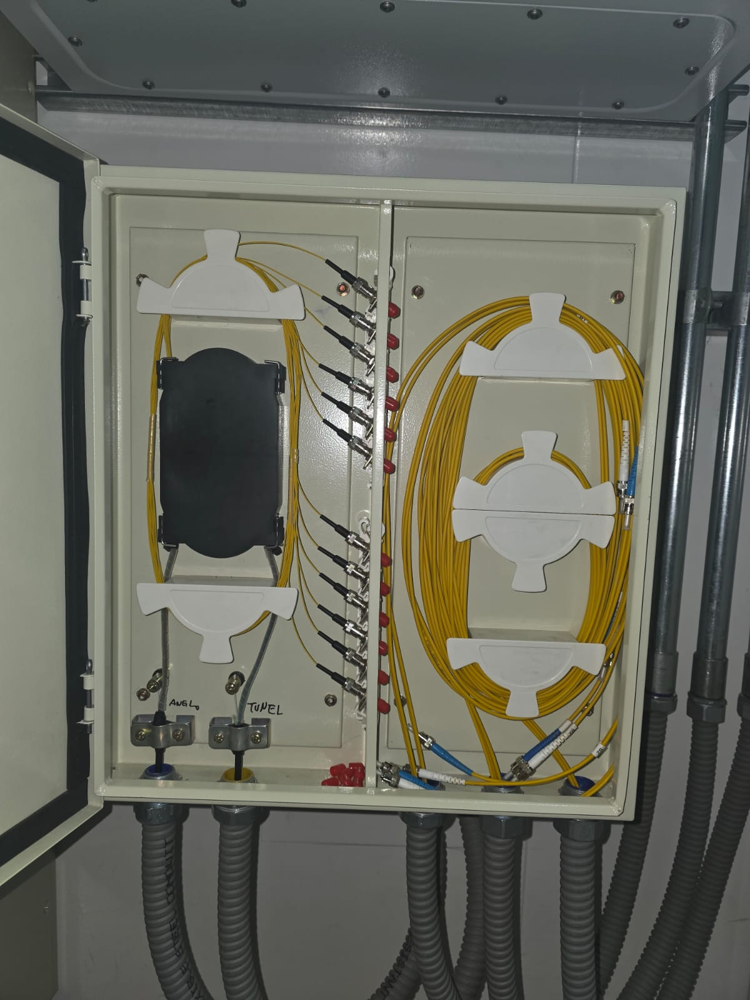
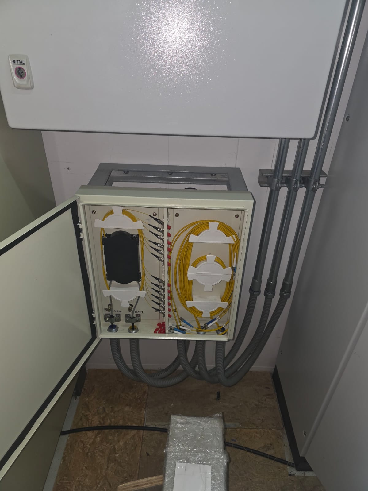
fusión de precisión y conectorización de fibra óptica en túneles e infraestructura subterránea.
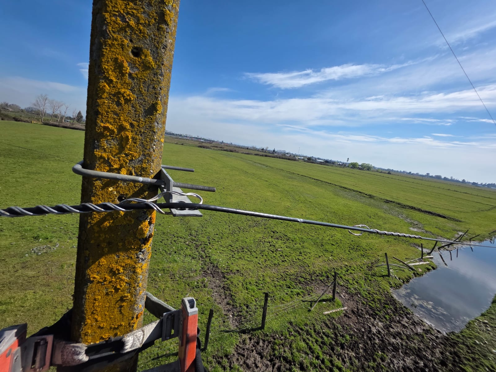
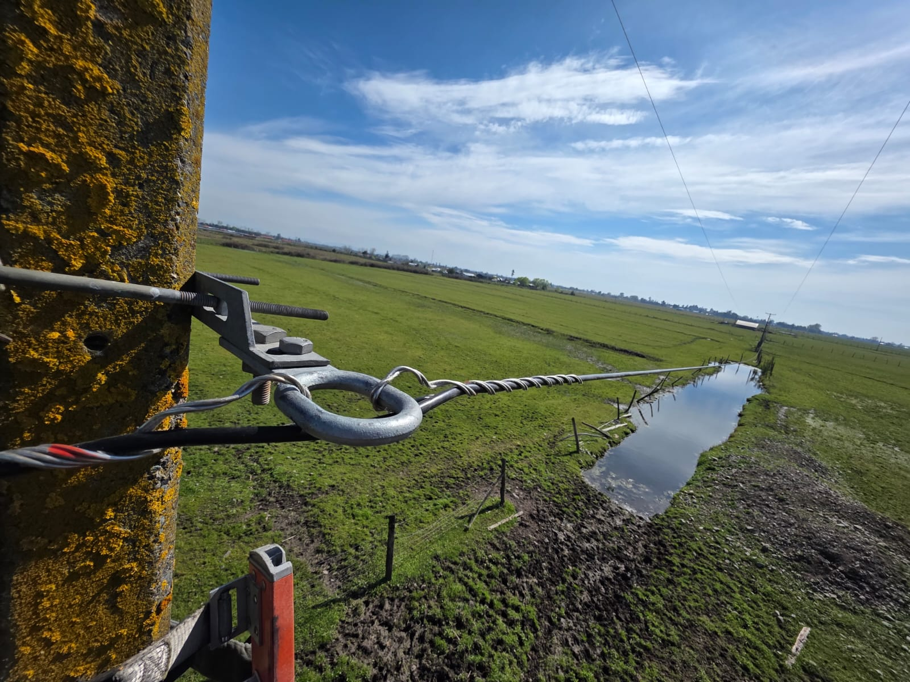
Servicio especializado de mantenimiento preventivo y correctivo de enlaces de telecomunicaciones instalados en postación aérea, con el objetivo de asegurar la continuidad, estabilidad y correcto funcionamiento de la infraestructura de red.
Descripción de ejemplo: instalación y organización de una nueva red de fibra óptica para instalaciones comerciales.
Descripción de ejemplo: medición de pérdidas y validación del rendimiento de enlaces ópticos instalados.